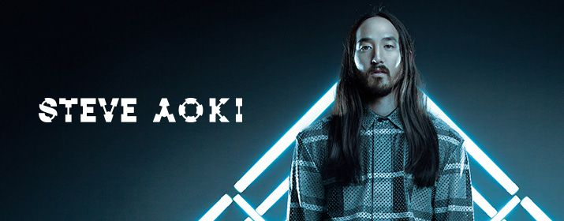

Steve Aoki stammt aus den USA und hat
sich dem Genre Electro/Indie verschrieben. Bereits in seiner Zeit an der
University of California gründete er sein eigenes Plattenlabel DIM MAK Records.
Aokis Debütalbum Pillowface and His Airplane Chronicles erschien 2008.
Steve Aoki remixte viele Musiker und Bands, darunter Michael Jackson, Duran
Duran, Drake, Lenny Kravitz, Bloc Party, Snoop Dogg, Peaches, Kid Cudi oder Robin Thicke.
Aoki gehört nach der Forbes-Liste 2013 zu den bestbezahlten DJs der Welt und belegt mit
$23 Millionen Platz 5. Steve Aoki ist in der EDM-Szene besonders durch seine Liveshows
bekannt. Das Publikum mit Torten zu bewerfen oder Champagnerduschen sind sein Markenzeichen.
2014 erschien sein aktuelles Album Neon Future I, unter anderem mit Delirious, Rage the Night
Away, Free the Madness, Back to Earth, Born to Get Wild und Afroki .
Derzeit belegt Steve Aoki Platz 10 der DJ MAG Top 100.